Hướng dẫn sử dụng MOD NRO Cường Lê
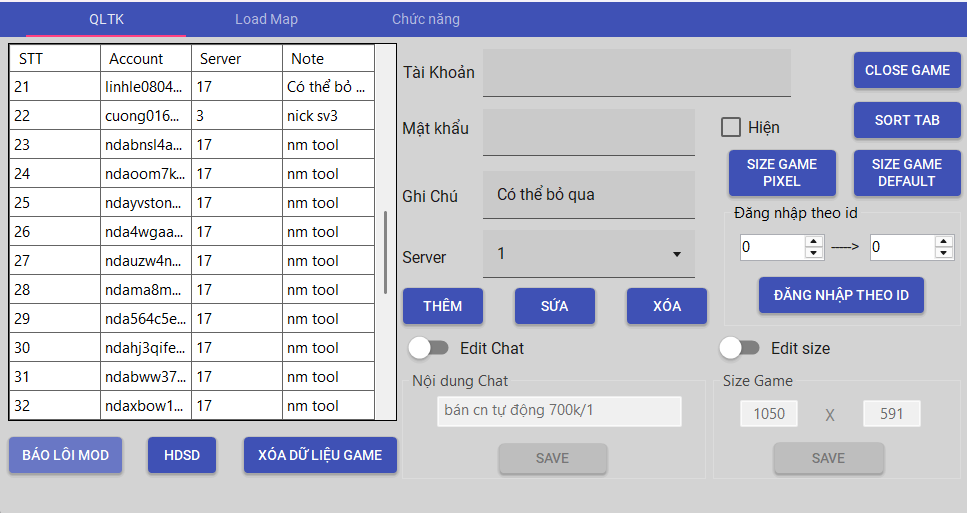
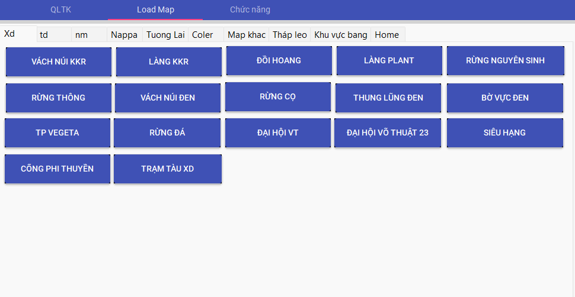
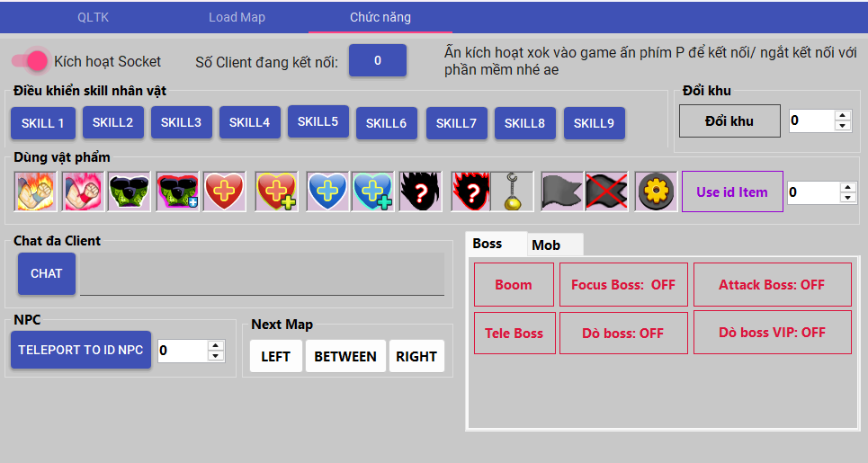
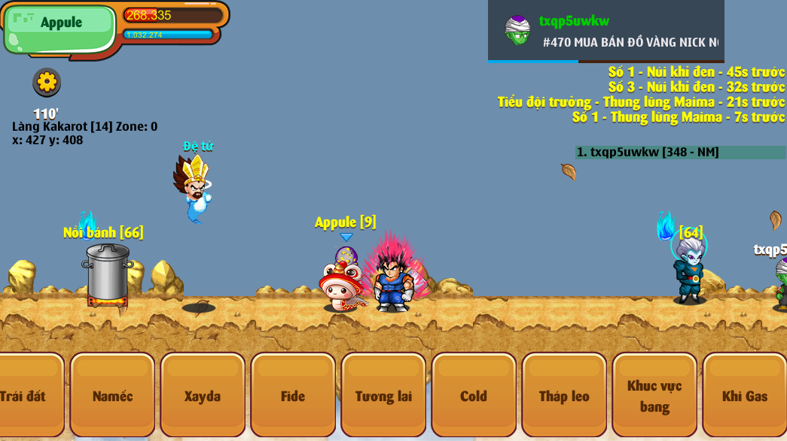
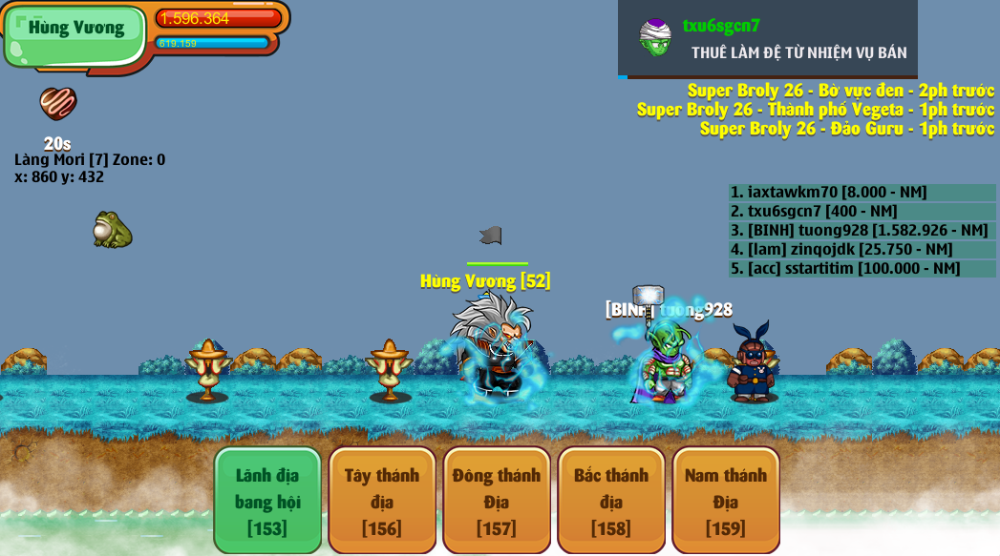
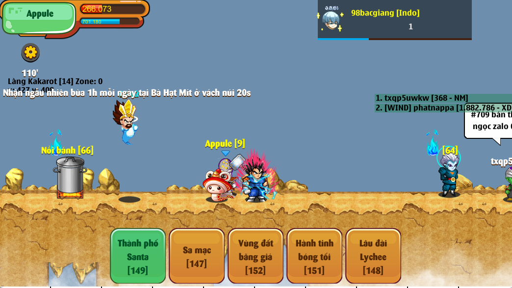
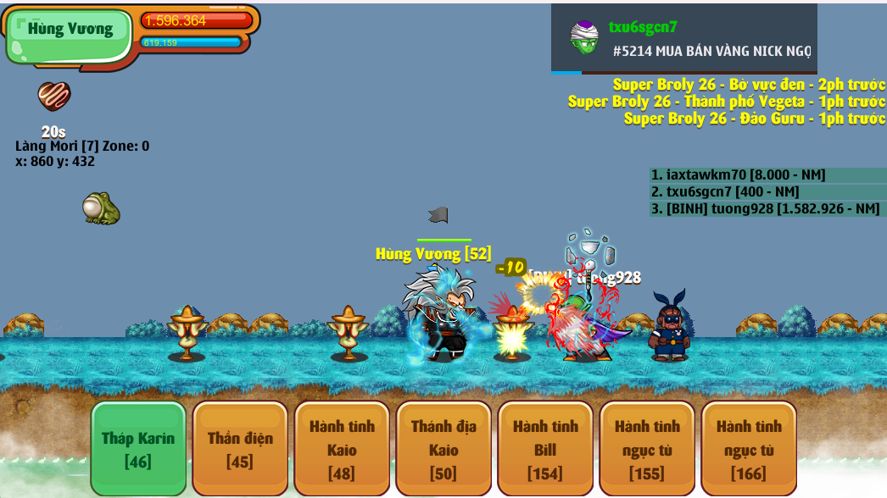
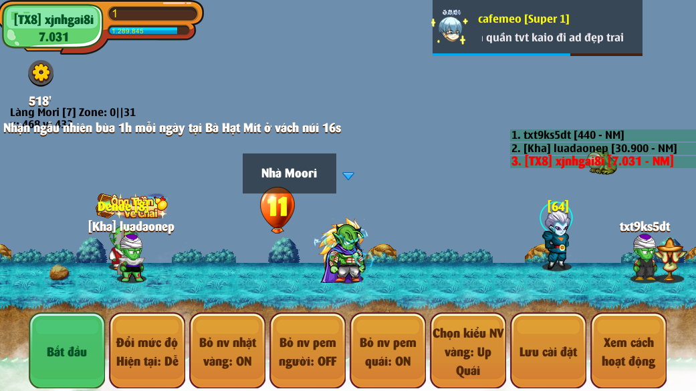
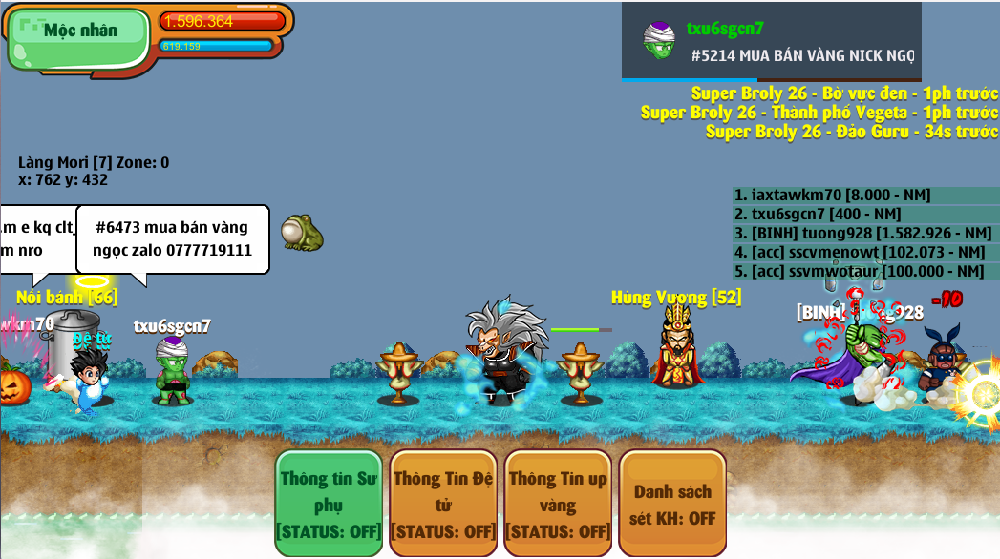
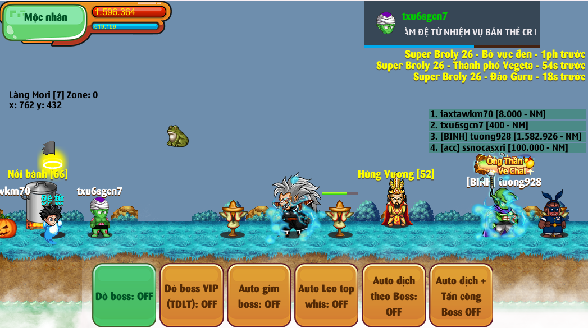


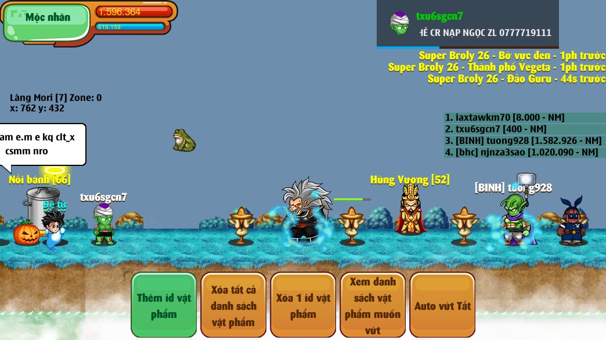
Lệnh Chat
- k_x: Đổi khu
- cheat_x: Thay đổi tốc độ của game
- s_x: Điều chỉnh tốc độ chạy của nhân vật
Tích hợp sẵn
- Hiển thị nhân vật trong game
- Hiển thị thông báo boss
- Tự cho đậu khi đệ kêu
- Hiển thị thời gian hồi chiêu
- Tốc độ game 2.3
Phím Tắt
- x: Menu tập hợp các chức năng cơ bản như mod koi. Nhiều quá ko tiện kể
- a: Tự động đánh
- s: Auto gim boss
- d: Đóng băng skill
- z: Tự mở/tắt cờ đen
- c: Mở Capsunbay
- h: Auto phù NRD
- j: Load map Trái
- k: Load map Giữa
- l: Load map Phải
- m: Mở tab khu
- n: Mở menu nhặt vật phẩm
- b: Mở danh sách bạn bè
- y: Mở kênh chat thế giới
- e: Auto hồi sinh bằng ngọc
- t: Bật/tắt TDLT
- i: Khóa ID hiện tại
- o: Auto vào NRO đen
- f: Dùng bông tai/ không có bông tai sẽ hợp thể lưỡng long nhất thể
- g: Gửi giao dịch
- v: Mở menu chức năng BOSS
- SHIFT + C: Bật chế độ siêu tối ưu CPU cắn CPU ít nhất có thể nhưng sẽ gây giật lag mỗi tab game được bật, hỗ trợ ae bật nhiều tab để auto buff đậu, buff hs New
- SHIFT + A: Mặc nhanh set 1
- SHIFT + Z: Mặc nhanh set 2
- SHIFT + P: Thoát game ra màn hình login. Này để tui test login thôi đừng bận tâm New
- p: Kết nối với QLTK điều khiển game New
Một số chức năng nổi bật
- Auto dò boss: có dò bằng tdlt (5s load 1 khu) và không dò tdlt (10s load 1 khu)
- Hack hồi sinh Namek không cần chọn mục tiêu, có thể tự buff máu và ki khi ở 1 mình
- Auto cờ đen: khi có người trong khu mở cờ đen sẽ tự tắt
- Auto đổi mục tiêu: cứ 5s đổi 1 lần
- Auto spam trạng thái đệ tử
- Auto spam bông tai tách liên tục nhưng duy trì trạng thái tách hợp thể
- Auto leo top Whis trên hành tinh Bill
- Tự đấm bản thân đến chết, hỗ trợ làm nhiệm vụ pem người bò mộng
- Hiển thị danh sách SKH nếu tài khoản có đồ KH
- Show thông tin TNM, SD, HP, KI của sư và đệ tử
- Auto bán đồ rác, trừ đồ TL, KH, sao pha lê
- Auto cất đồ SKH, Thần linh, sao pha lê
- Auto dịch chuyển bám sát boss
- Auto tự tấn công boss bằng các skill đang có như train quái
- Auto đánh toàn bộ người bật cờ trong khu
- Auto up đệ kok
- Auto pem khi đệ sủa "sao sư phụ không đánh đi?"
- Xóa hiệu ứng hợp thể, TDL, xóa tàu bay giúp chơi game đỡ bị đau mắt và nhìn thấy địch dù bị choáng
- Auto vứt vật phẩm item. id item dc ghi trong item ấn vào item có ví dụ: bông tai [451] New
Lịch sử Fix lỗi
- Bản update 1.3:
- Fix lỗi crash game, dò boss, văng game
- Bản update 1.4:
- Fix lỗi load map
- Update thông báo tự động khi có bản mới
- Fix lỗi sắp xếp tab game không cần kích thước 720x520
- Fix lỗi load map sai ID
- Fix lỗi đệ tử hỏi mà sư phụ không đánh
- Bản update 1.5:
- Fix lỗi chọn server lâu ở bản 244. Xóa luôn bản 222 vĩnh viễn và thêm bản 244 siêu nhẹ tối ưu CPU cho ae mở auto buff đậu,kẹp hs,..
- Fix lỗi không tự login lại khi bị văng game
- Fix lỗi chỉ hiển thị đồ sao trên người sư phụ
- Fix QLTK nhỏ hơn ít chiếm diện tích và điều chỉnh nhẹ danh sách tài khoản giúp hạn chế tầm nhìn mục tài khoản
- Bản update 1.6:
- Fix hiển thị ngọc xanh và hồng từ dạng 10k2, 5k3 về dạng 10234, 5312
- Fix các skill dựng thành 2 hàng khi vào game → chuyển về 1 hàng ngang duy nhất
- Fix pem người bật cờ trong khu, sẽ không pem boss bật cờ như Thủy Tinh, Sơn Tinh
- Fix giao diện QLTK trông bớt mờ mờ như phim sex, gọn hơn và một số chức năng ae tự mò
- Fix lỗi load map quá nhanh gây đen màn hình game → delay load map 200L
- Fix lỗi tự động login check thời gian nhanh quá → điều chỉnh thời gian login đợi lâu hơn khi mất kết nối
- Fix lỗi load map đến các map chưa đến được nhưng vẫn spam
- Fix 1 tý về thông báo boss, ae dùng sẽ hiểu
- Xóa sạch hiệu ứng màu mè trong map
- Fix train quái không đúng theo loại / vị trí quái đã chọn
- Update chức năng:
- Thêm chức năng thay logo trong game, background,... cho ae nào có sở thích ảo ma
- Thêm phím V ấn mở tab chức năng boss nâng cao, tiện dò khu boss và tấn công boss
- Thêm hiện thông số up vàng giúp ae check vàng 1 hit được nhiêu và tổng vàng up được kể từ khi bật chức năng
- Bản update 1.7:
- Fix hành trang, rương: bỏ các tab gây phiền toái với lỗi vặt do tụi ad Temobi nhân viên mới làm như cứt
- Fix màu game trở nên đơn giản hơn nhưng vẫn đẹp
- Fix lỗi khi ấn vào danh sách nhân vật thì không tele + trỏ vào nhân vật (bản 1.6 làm rồi mà build vội nên quên :)))
- Hiển thị một số thông tin của mod giúp newbie dễ dùng hơn
- Fix lỗi không paint skill khiên
- Update chức năng:
- QLTK thêm mục chức năng,... nhiều nên không tiện kể vì lười
- Train quái mặc đồ bao chất: đang khỉ mặc set 1, hết khỉ mặc set 2 – phù hợp với ae dùng set cải trang khỉ và set Kakarot (super 1,2), tránh lỗi khỉ sịt thiếu dame
- Fix triệt để lỗi login lại khi bị mất kết nối
- Bản update 1.8:
- Thêm Xmap full tất cả map – từ ngục tù, khí gas đến khu vực bang... đi đâu cũng được, không cần gõ tay mỏi tay
- Tối ưu thuật toán load map chống ban – giúp ae yên tâm bay nhảy mà không sợ ăn gậy
- Fix lỗi khi ấn Tele trong danh sách nhân vật – giờ bấm là đi, không còn đứng hình mất hồn nữa
- Fix auto leo top Whis – giờ sẽ tự lên hành tinh Bill để train, không cần ngồi canh
- Tối ưu thêm: auto check rương đồ nhà khi ở bất kỳ map nào – tiện như Grab, mở được mọi lúc mọi nơi
- Bản update 1.9:
- Cập nhật chức năng autoBó Móng – hỗ trợ tự động xử lý nhanh gọn, tiện lợi cho ae lười
- Fix lỗi chặn Xmap đối với các nick còn nhiệm vụ chưa qua được map – tránh tình trạng đi lố map gây bug
- Fix một số lỗi lặt vặt không đáng kể nhưng đủ để gây khó chịu
- Bản update 2.0:
- -Thêm 1 số chức năng hay ho từ bản 246 mới của ad nro mà bản cũ hơn không thể có
- Fix & tối ưu auto bỏ mộng – giờ auto chạy mượt hơn, không còn giật lag khó chịu nữa
- Fix lỗi hành trang khi ấn ở mép – không còn hiện nhầm item áo đang mặc, yên tâm bấm thoải mái
- Thêm tính năng: paint rương đồ vào menu hành trang – tiện check đồ mọi lúc, mọi nơi
- Lưu ý: đừng vứt đồ bậy trong menu này – vì nó sẽ vứt đồ bên hành trang thật đó nha, đây là **tính năng**, không phải bug 🤡💩
Chức Năng Phần Mềm QLTK
- Click vào dòng tài khoản: Mở game ngay lập tức.
- Thay đổi kích thước game: Nếu kích thước nhỏ hơn 720x500, game sẽ chuyển về dạng pixel.
- Load map trên nhiều tab: Cho phép thao tác nhanh trên nhiều bản đồ.
- Chỉnh sửa nội dung auto chat: Bao gồm chat inbox, chat thường và chat thế giới.
- Sắp xếp tab game nhanh: Sắp xếp các tab game dễ dàng và nhanh chóng.
- Một số chức năng game: Nhiều lắm nên tự mở QLTK xok ấn mục chức năng rồi xem
- Thông báo khi có phiên bản mới: QLTK tự động thông báo khi có bản cập nhật mới.
- Lưu ý: Nếu phần mềm báo chưa có framework 8.0 thì ấn vào file có tên : "Tải framework 8.0.bat"
Nói không với sống bẩn keylog.